Data Architecture for AI
Your Data Architecture Needs an Upgrade
If you’ve been working in enterprise architecture for any length of time, you already have a data architecture. You have data warehouses humming along, data lakes that may or may not be well-organized, ETL pipelines that somebody built three years ago and nobody wants to touch, master data management initiatives in various states of maturity, and data governance frameworks that range from aspirational to deeply embedded. None of that goes away when AI enters the picture. In fact, AI doesn’t replace any of it — it makes every single piece more important than it was before, and then it adds entirely new requirements on top.
Think of it this way: your existing data architecture is the foundation of a building, and AI is a new set of floors you want to add. If the foundation is solid, you’re in good shape. If it’s cracked and settling, adding floors is going to make every existing problem dramatically worse. This chapter is about understanding what changes when AI enters your data landscape, what new components you need to introduce, and how to think about the whole thing as a coherent architectural concern rather than a series of one-off projects.
The Data Quality Problem
Why It Matters More Now
Here’s a distinction that sounds subtle but is actually profound: in traditional systems, bad data causes bad reports. Someone looks at a dashboard, sees a number that doesn’t make sense, flags it, and a data analyst goes digging to find the problem. It’s annoying, it wastes time, but it’s manageable because there’s a human in the loop who can exercise judgment and catch obvious errors before they lead to action.
In AI systems, the dynamic is fundamentally different. Bad data doesn’t just produce bad reports — it produces bad decisions, and those decisions often happen at a speed and scale that makes human review impractical. Consider what this means in practice: your fraud detection model, trained on mislabeled data, will approve fraudulent transactions with high confidence. It won’t flag them for review or express uncertainty — it will simply get the answer wrong, systematically, across thousands of transactions before anyone notices a pattern. Your customer service chatbot, grounded in outdated documentation, will give customers wrong answers with the same polished tone it uses to give correct ones. Your recommendation engine, trained on biased historical data, will discriminate against certain groups in ways that are subtle enough to evade casual inspection but significant enough to create real harm and legal exposure.
The fundamental rule to internalize here is that AI amplifies your data quality in both directions. Good data becomes an extraordinary competitive advantage because your models are learning real patterns and making genuinely useful predictions. Bad data becomes an extraordinary liability because your models are learning false patterns and acting on them with confidence. There’s no neutral middle ground — AI turns your data quality into either a force multiplier or a risk multiplier, and you need to understand which one it is for your organization before you start building.
Data Quality Dimensions for AI
If you’re already familiar with data quality frameworks, the dimensions in the table below will look familiar. What’s new is the second column — the AI-specific concerns that layer on top of your traditional data quality worries. Each of these dimensions takes on additional weight and sometimes entirely new meaning when your data is feeding machine learning models or grounding large language model responses.
| Dimension | Traditional Concern | AI-Specific Concern |
|---|---|---|
| Accuracy | Reports are wrong | Model predictions are wrong |
| Completeness | Missing records | Biased model (underrepresented groups) |
| Timeliness | Stale dashboards | Model drift (trained on old patterns) |
| Consistency | Conflicting sources | Contradictory training signals |
| Relevance | Unused fields | Noise that degrades model performance |
| Lineage | Audit compliance | Reproducibility, bias tracing |
It’s worth spending a moment on completeness, because it’s the dimension that catches most enterprise teams off guard. In a traditional reporting context, missing records are an inconvenience — your quarterly report might undercount revenue by a few percent, and someone will notice and correct it. In an AI context, missing records can create something much more insidious: a model that works beautifully for the populations well-represented in your data and fails silently for everyone else. If your training data underrepresents certain customer demographics, your model will literally not know how to handle those customers well, and it won’t tell you that — it will just quietly perform worse for them. This is how bias enters AI systems, and it’s fundamentally a data completeness problem.
Data Pipelines for AI
When architects think about data pipelines, they usually think about ETL or ELT — extracting data from source systems, transforming it, and loading it into a warehouse or lake. AI introduces three distinct types of data pipelines, each with its own architectural characteristics, performance requirements, and operational concerns. Understanding these three pipeline types and how they relate to each other is one of the most important things you can do as an architect working in this space.
Training Data Pipelines
The training data pipeline is responsible for feeding data to the model training process. It typically runs periodically — daily, weekly, or on-demand when you decide it’s time to retrain — and its job is to take raw data from your source systems and transform it into a clean, labeled, versioned dataset that your data scientists or ML engineers can use to train models.
There are several key architectural decisions you’ll need to make when designing this pipeline, and each one has significant downstream consequences.
The first is where and how labeling happens. Labeling is the process of attaching ground truth to your data — telling the model what the “right answer” is for each example so it can learn. You have a spectrum of options here. Manual labeling by human experts is expensive and slow but produces the most accurate labels, and it’s often the right choice for high-stakes domains like medical imaging or legal document classification. Semi-automated labeling, where you use a large language model to generate initial labels and then have humans review and correct them, can dramatically reduce cost while maintaining reasonable accuracy. Weak supervision, where you write programmatic rules to generate labels automatically, is the cheapest and fastest approach but requires deep domain expertise to write rules that produce labels good enough to train on. Most organizations end up using a combination of all three, depending on the use case and how much labeled data they need.
The second decision is how to version your datasets. This might sound like a mundane operational concern, but it’s actually architecturally critical. You need to be able to reproduce any training run exactly as it happened — using the same data, the same preprocessing steps, the same labels. This means versioning your datasets with the same discipline you version your code, and linking dataset versions to model versions so you can always answer the question “what data produced this model?” Tools like DVC, LakeFS, or managed dataset versioning in cloud ML platforms can help, but the important thing is to design this into your architecture from the start rather than trying to retrofit it later.
The third decision is storage format, and this one is more practical than strategic. Parquet works well for tabular data, JSONL is a natural fit for text datasets, TFRecord is the native format for TensorFlow pipelines, and WebDataset works well for image datasets. Choose based on what your training infrastructure expects and what your team is comfortable with — this is one of those decisions where there’s no universally right answer, just locally appropriate ones.
Inference Data Pipelines
While training pipelines prepare data for building models, inference pipelines feed data to models that are already deployed and serving predictions. These come in two flavors, and the choice between them matters more than many architects realize.

The most important architectural decision here is whether you actually need real-time inference or whether batch processing will do. There’s a strong gravitational pull toward real-time in enterprise AI projects — it feels more impressive, more “AI-like,” and stakeholders often assume it’s necessary. But many AI use cases work perfectly well as batch jobs at a fraction of the cost. Document processing, report generation, content classification, lead scoring, risk assessment on a portfolio — all of these can run as nightly or hourly batch jobs and still deliver enormous value. Real-time inference adds significant architectural complexity: you need low-latency serving infrastructure, autoscaling, caching strategies, fallback mechanisms, and monitoring that can detect issues in milliseconds rather than minutes. Only build for real-time when the use case genuinely demands it — when a customer is waiting for a response, when a transaction needs to be approved or declined in the moment, when a safety system needs to react immediately.
The other key component to consider here is the feature store, which becomes relevant when your ML models need computed features at inference time. A feature store like Feast or Vertex AI Feature Store serves as a bridge between your training and serving pipelines, ensuring that the features your model sees at inference time are computed the same way they were during training. Without this consistency, you get a problem called training-serving skew, where your model performs differently in production than it did during evaluation because it’s seeing slightly different inputs. If you’re building ML models that depend on engineered features — things like “average transaction amount over the last 30 days” or “number of support tickets opened in the last quarter” — a feature store should be part of your architecture.
RAG Data Pipelines
Retrieval-augmented generation, or RAG, has emerged as one of the most common patterns for enterprise AI, and it introduces a pipeline type that’s architecturally distinct from both training and inference pipelines. The RAG pipeline is responsible for taking your organization’s documents and knowledge bases, breaking them into pieces, converting those pieces into mathematical representations called embeddings, and storing those embeddings in a vector database where they can be efficiently searched at query time.

The chunking strategy is the decision that has the most impact on the quality of your RAG system, and it’s one that teams consistently underestimate. Chunking is how you split your source documents into pieces for embedding and retrieval, and the way you do it fundamentally determines what your system can and cannot find. If your chunks are too large — say, entire chapters or full documents — the embedding for each chunk becomes a blurry average of too many topics, and retrieval becomes noisy and imprecise. If your chunks are too small — individual sentences or even single paragraphs — each chunk lacks enough context to be useful on its own, and the model struggles to generate coherent answers from fragments. Most organizations find a sweet spot in the range of 500 to 1,000 tokens per chunk, with an overlap of about 100 tokens between consecutive chunks so that ideas that span a chunk boundary don’t get lost. But the right answer depends heavily on the nature of your documents, and you should expect to experiment with this.
Update frequency is another architectural decision that deserves careful thought. You need to decide how quickly changes in your source documents should be reflected in your RAG system’s knowledge base. Event-driven re-embedding — where you automatically re-process a document whenever it changes — gives you the freshest possible knowledge base but adds significant architectural complexity. Nightly batch re-indexing is simpler and cheaper, and for most enterprise use cases, a few hours of latency between a document update and its availability in the RAG system is perfectly acceptable. Most enterprises start with nightly batch and only move to event-driven updates for specific documents where freshness is critical, like compliance policies or pricing information.
Finally, don’t overlook metadata. When you store embeddings in your vector store, store the source document path, the date it was last modified, the author, the access level, and any other relevant context alongside each embedding. You will need this metadata for filtering search results (so users only find documents they’re authorized to see), for attribution (so the system can tell users where its answers came from), and for debugging (so you can figure out why the system gave a particular answer and whether the underlying source material was correct).
Data Governance for AI
What Changes
If you already have a data governance framework — and most enterprises do, to varying degrees of maturity — the good news is that you don’t need to throw it out and start over. The framework you have provides a solid foundation. The less convenient news is that AI introduces a set of concerns that your existing framework almost certainly doesn’t cover, and you need to extend it deliberately rather than hoping that your current policies are sufficient.
The table below maps your existing governance capabilities to the AI-specific extensions each one needs. Think of this not as a criticism of your current framework but as a natural evolution — just as your governance framework had to evolve when you moved from on-premises databases to cloud data lakes, it now needs to evolve again for AI.
| Existing Governance | AI Extension |
|---|---|
| Data catalog | Add: training datasets, model cards, prompt templates |
| Access controls | Add: who can train models on which data |
| Privacy (GDPR, etc.) | Add: right to be forgotten from training data, model outputs |
| Data lineage | Add: which data trained which model version |
| Quality monitoring | Add: data drift detection, feature distribution monitoring |
The access control extension deserves special attention because it represents a genuinely new governance challenge. In traditional systems, you govern who can read data and who can write data. With AI, you need a third dimension: who can train on data. Just because someone has read access to a dataset for reporting purposes doesn’t mean they should be able to use that dataset to train a model, especially if that model might be deployed externally or used to make consequential decisions about individuals. Your governance framework needs to be able to express and enforce this distinction.
The Model Card
A model card is, in essence, the AI equivalent of a system design document. For every model in your architecture — whether it’s a fine-tuned model you built in-house, a third-party model you’ve integrated, or a large language model you’re accessing through an API — you should maintain a model card that documents the key information anyone in the organization might need to understand, evaluate, or make decisions about that model.
The model card should describe what data the model was trained on, including what was deliberately excluded and why. It should document known limitations and biases — every model has them, and pretending otherwise is both intellectually dishonest and practically dangerous. It should include performance metrics broken down by demographic group, so you can understand whether the model serves all populations equitably or whether there are groups for whom it performs significantly worse. It should specify the intended use cases, and equally importantly, it should explicitly call out use cases the model is not intended for — the uses where it hasn’t been validated, where its error rates would be unacceptable, or where the potential for harm is too high. And it should identify who owns the model and how to report issues when something goes wrong in production.
If you’re an enterprise architect, think of model cards the way you think of API documentation. They serve the same fundamental purpose — enabling other teams to understand and correctly use a component they didn’t build — but for AI components instead of traditional services. Model cards should live in your architecture repository alongside system design documents, and they should be subject to the same review and update processes.
Data Lineage for AI
Data lineage has always been an important part of enterprise data governance, but AI introduces lineage requirements that go well beyond traditional audit trails. In a traditional system, lineage is primarily about compliance: being able to show an auditor where a number in a report came from, what transformations it went through, and whether those transformations were correct. In an AI system, lineage becomes a safety and accountability mechanism.

There are four lineage questions you need to be able to answer for any AI component in your architecture. First, what data was used to train this model? This is training lineage, and it’s essential for reproducibility — if you need to retrain a model or understand why it’s behaving a certain way, you need to know exactly what data shaped it. Second, what data is this model accessing at inference time? This is runtime lineage, and it matters because even a well-trained model can produce bad outputs if the data it accesses at inference time is stale, incorrect, or inappropriate. Third, which specific user data has been used in which model’s training? This is privacy lineage, and it’s becoming a legal requirement under regulations like GDPR — if a customer exercises their right to be forgotten, you need to know which models were trained on their data and what that means for those models. Fourth, if a data source is found to be biased or corrupt, which models are affected? This is impact lineage, and it’s your ability to perform a blast radius analysis when something goes wrong with your data — to quickly identify every downstream AI system that might be compromised and take appropriate action.
Building the infrastructure to answer these four questions is not a trivial undertaking, but it’s also not optional if you’re serious about operating AI responsibly at enterprise scale.
Real-World Example: The Bank’s Data Journey
Let me walk you through a real-world example that illustrates just how much of the AI journey is actually a data journey. A retail bank wanted to build an AI-powered financial advisor chatbot — one that could answer customer questions about products, help with account inquiries, and provide personalized financial guidance. The technology side of this project — the model selection, the prompt engineering, the user interface — took about three months. The data architecture work took nine months. And that ratio is not unusual; in fact, it’s remarkably consistent across the enterprise AI projects I’ve seen.
In Phase 1, Discovery, the team conducted an inventory of the data they would need. What they found was sobering but, again, entirely typical. Customer data was spread across 14 different systems, each with its own schema, its own update cadence, and its own quirks around data quality. Transaction data lived in 3 separate databases with inconsistent categorization schemes. Product documentation — the knowledge the chatbot would need to answer customer questions — was scattered across SharePoint sites, Confluence spaces, and approximately 200 PDFs, many of which hadn’t been updated in years and some of which contradicted each other. In short, none of this data was ready for AI. It was “good enough” for the humans who had learned to navigate its inconsistencies, but it was nowhere near the quality or accessibility bar that an AI system requires.
In Phase 2, Data Foundation, the team did the unglamorous but essential work of getting their data house in order. They built a unified customer data pipeline that reconciled customer records across all 14 source systems into a single, consistent view — a project that took six months by itself and surfaced data quality issues that had been lurking undetected for years. They created a document processing pipeline to extract content from those 200 PDFs and various wiki pages, structure it consistently, and identify conflicts and outdated information — another two months of work. Finally, they set up the RAG knowledge base with product information, FAQs, and compliance rules, which took about a month once the upstream data was clean and well-organized.
In Phase 3, Governance, the team established the controls and documentation that would allow the chatbot to operate responsibly. They classified all data sources by sensitivity level, drawing clear boundaries around what could and couldn’t be used. They defined explicit policies for which data could be sent to external LLM APIs versus which data had to stay on-premises — a critical decision for any financial institution dealing with customer financial data. They created model cards for each AI component in the system, documenting capabilities, limitations, and ownership. And they implemented PII detection in both the input pipeline (to catch personal information in customer queries) and the output pipeline (to prevent the model from inadvertently revealing one customer’s information to another).
In Phase 4, Operations, the team built the ongoing monitoring and maintenance processes that would keep the system healthy over time. They automated data quality checks on the RAG knowledge base so that stale or inconsistent documents would be flagged before they could mislead customers. They set up drift detection on the ML models to catch situations where the model’s performance was degrading because the real world had changed in ways the training data didn’t reflect. And they established a monthly data review cadence with the compliance team to ensure ongoing alignment with regulatory requirements.
The lesson here is one that every enterprise architect working on AI needs to internalize: the chatbot was “done” in 3 months, but the data architecture work took 9 months. This is normal. It’s not a sign that something went wrong — it’s a sign that the team did it right. The organizations that try to skip or shortcut the data work end up with AI systems that are impressive in demos and unreliable in production.
Key Takeaways
- AI amplifies your data quality in both directions — good data becomes a powerful asset while bad data becomes an active liability, so invest in fixing your data before you invest in building models.
- You need three distinct types of data pipelines for AI — training pipelines, inference pipelines, and RAG pipelines — and each one has its own architectural requirements, operational characteristics, and failure modes that you need to understand and plan for.
- Your existing data governance framework provides a solid foundation, but it needs deliberate extension to cover training data provenance, model cards, AI-specific privacy concerns like the right to be forgotten from training data, and new access control dimensions around who can train on which data.
- Data lineage for AI goes beyond traditional audit trails and becomes a safety and accountability mechanism — you need to be able to trace from a model’s decisions all the way back to the specific data that shaped those decisions, and you need to be able to assess blast radius when a data source is found to be problematic.
- The data work consistently takes longer than the model work, often by a factor of two to three, and this is not a failure of planning — it is a fundamental characteristic of enterprise AI projects that you should communicate to stakeholders early and often.
Companion Notebook
 — Build a
complete RAG data pipeline: ingest PDFs, chunk text, generate
embeddings, store in a vector database, and query. See how chunking
strategy affects retrieval quality.
— Build a
complete RAG data pipeline: ingest PDFs, chunk text, generate
embeddings, store in a vector database, and query. See how chunking
strategy affects retrieval quality.